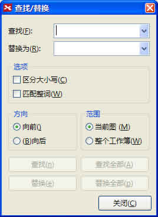

XMind
思维协作的典范
在XMind内查找/替换
XMind中您可以一如既往地轻松使用查找/替换功能。方法如下：
打开图；
按照下列方法打开查找/替换对话框：
在菜单栏选择"编辑 > 查找/替换"。
或者使用快捷键"Ctrl+F"（Mac用户请使用 Command+F）。
您可以对思维图中的任何文字进行查找/替换，包括主题、标签、外框、概要以及备注的内容。
查找/替换对话框

您可能还对下列内容感兴趣……
主题
视图
在线搜索
帮助中心